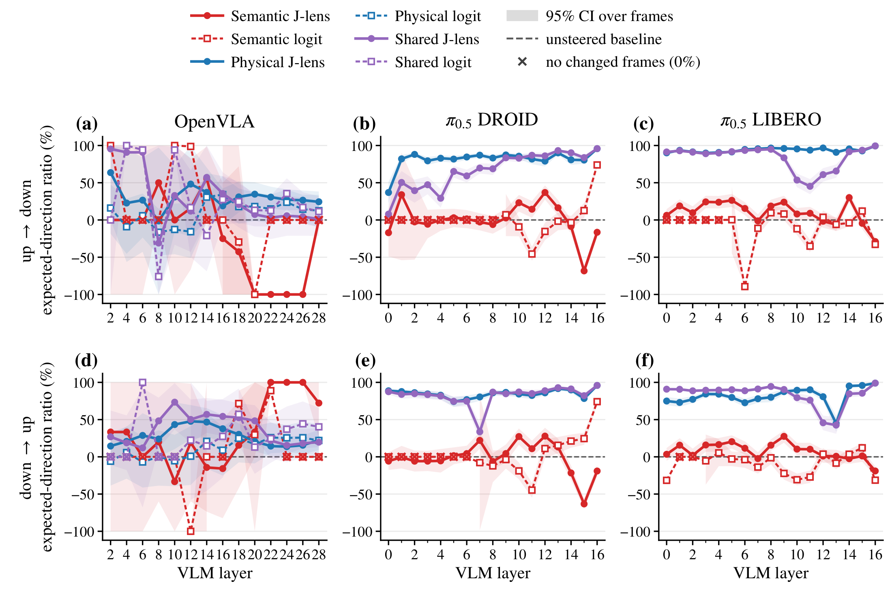
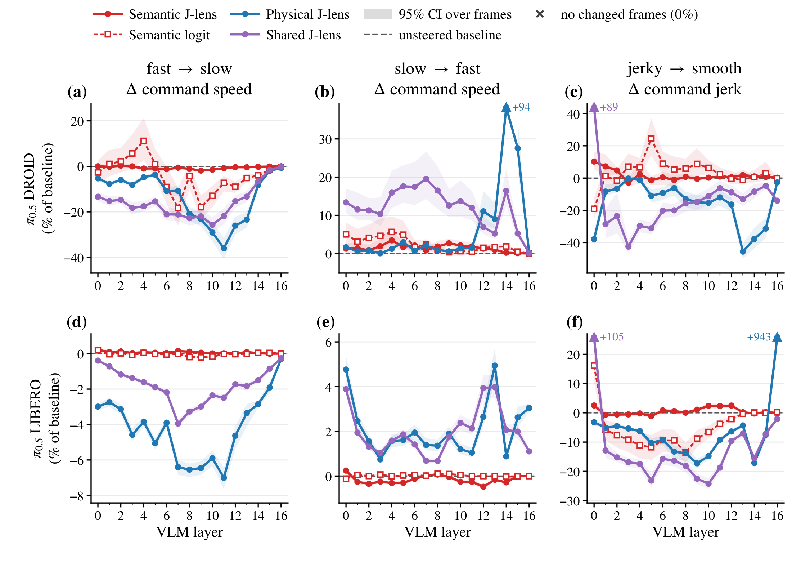
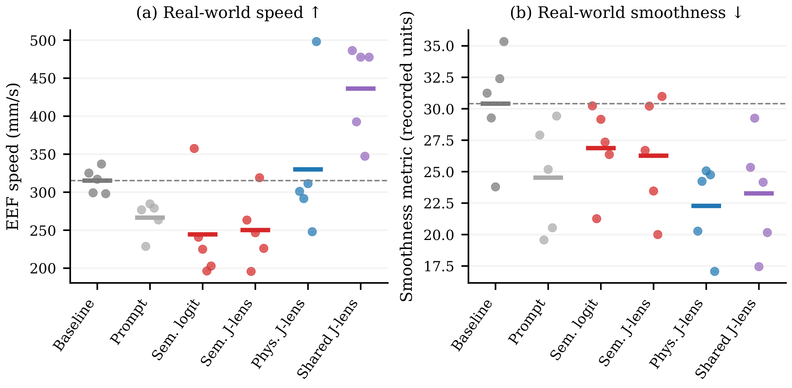
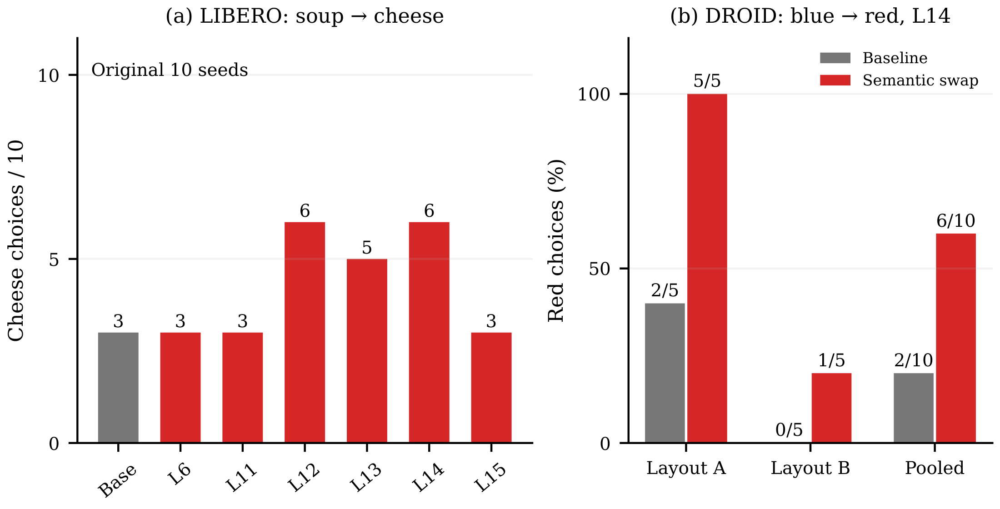
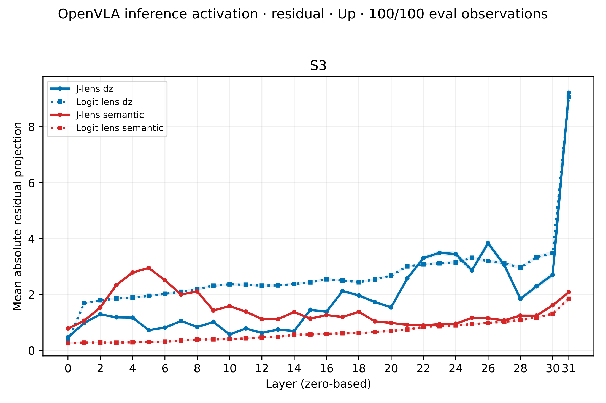
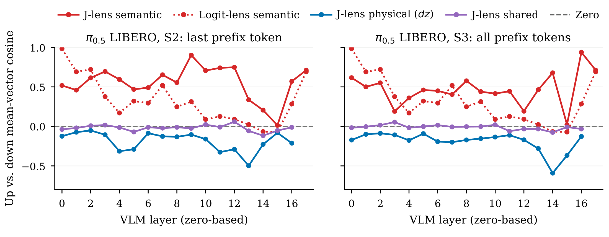
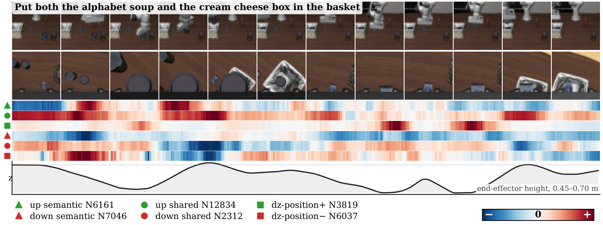
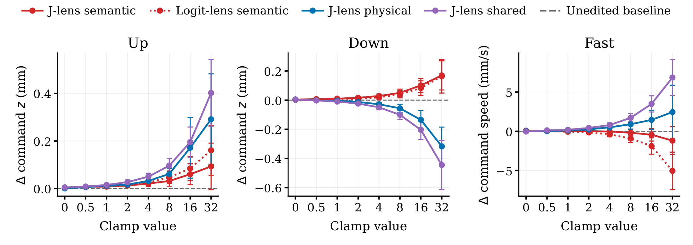
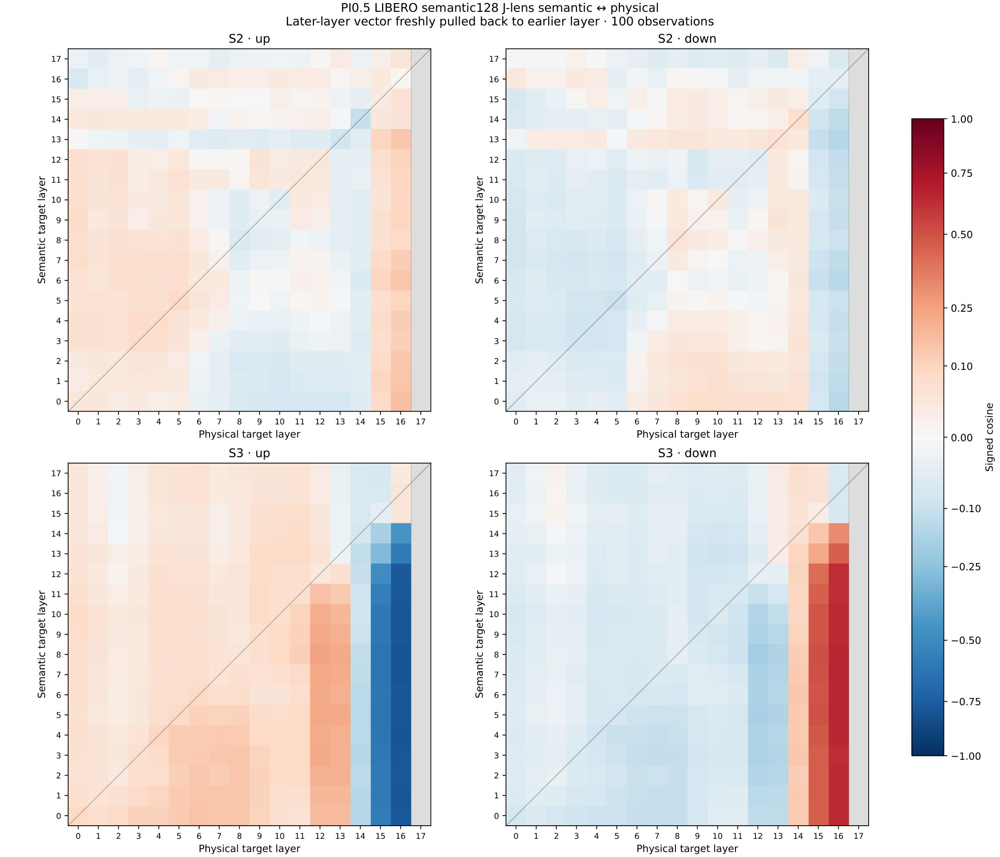

The semantic direction that names a motion is not the one that executes it.
Author names, affiliations, and contact details are withheld for double-blind review.
Please do not attempt to identify the authors.
Just as humans formulate an intention to act before committing muscles to movement, vision-language-action (VLA) models must bridge high-level semantic reasoning with low-level physical control. Yet how conceptual goals translate into motor commands across intermediate representations remains opaque.
Current steering methods typically isolate internal features by the vocabulary tokens they promote, implicitly assuming that the semantic representation naming a motion concept is the one that executes it. In this work, we refute this assumption by extending the Jacobian lens from discrete vocabulary logits to arbitrary differentiable objectives over continuous action trajectories. Our formulation computes vector-Jacobian pullbacks through the policy's downstream dynamics in a single backward pass, providing a training-free, probe-free mechanism that operates at inference time across both autoregressive heads and iterative flow-matching action experts.
Evaluating across OpenVLA and \(\pi_{0.5}\) in simulation and on a physical manipulator reveals a fundamental double dissociation: action-grounded directions reliably modulate trajectory dynamics, including displacement, velocity, and smoothness, while preserving task completion, whereas vocabulary-aligned directions fail at physical control and only influence non-physical semantic choices such as target object selection. Mechanistic analysis reveals the geometric origin of this divergence: linguistic subspaces embed action antonyms as proximate semantic neighbors, whereas action-grounded subspaces map them to opposed vectors that phase-lock to gripper kinematics over time. Our findings demonstrate that effective VLA control requires intervening directly on the internal subspace governing physical execution rather than the linguistic features that label it.
A VLA maps images and an instruction to robot commands through a vision-language backbone. We want to find, inside that backbone, residual directions and MLP units that carry a motion concept such as up or slow, and to change the policy's behavior by editing them at inference time without touching the weights. The method has three parts: a Jacobian-lens pullback that turns any scalar readout of the policy's output into a direction at every layer; two families of readouts, linguistic and physical, that give semantic and motor directions; and a gated residual-swap intervention.
The logit lens reads an intermediate residual by projecting it onto the output vocabulary, and prior VLA steering selects neurons by the tokens their write vectors promote. Both ignore everything downstream of the layer being read: later blocks, normalization, and, for \(\pi_{0.5}\), a flow-matching action expert that has no vocabulary at all. We instead ask how the policy's output responds to a perturbation of the residual stream at a given layer.
Concretely, we take a scalar readout of the model output, either a language score or a statistic of the sampled action chunk, and differentiate it with respect to a perturbation applied to the residual stream after a chosen block. The result is a vector-Jacobian product through the exact downstream computation, so one backward pass yields a direction at every layer, and each direction inherits whatever nonlinearity lies between that layer and the output. Directions are averaged over a set of calibration frames and normalized. Two source scopes are used: one perturbs only the final prefix position, the other perturbs every valid image and text position. A neuron is ranked for a direction by how well its MLP write vector aligns with that direction.
For a concept word, the semantic readout measures how strongly the final backbone state promotes that word relative to a background vocabulary, using the model's own output embeddings and final normalization. \(\pi_{0.5}\) never decodes language, so this readout probes the backbone's latent preference for the concept rather than any generated text; for OpenVLA the same score is read at its action-prediction steps. Differentiating this readout gives the semantic J-lens direction. Using the concept's embedding direction directly, with no Jacobian, gives the static semantic logit baseline, the same direction at every layer.
A kinematic readout is a differentiable statistic of the predicted commands. For \(\pi_{0.5}\) we fix the sampling noise, run the flow-matching action expert on the perturbed prefix, and convert the predicted action chunk into end-effector displacements. Three readouts measure the chunk's mean vertical displacement, its mean speed, and its mean within-chunk jerk; their negatives define down, slow, and smooth. Because the expert attends to the prefix at every denoising step, the gradient flows through the whole sampler rather than through a single step. For OpenVLA, whose actions are discrete tokens, the vertical readout is a score over the upward or downward action bins. These give the physical J-lens direction. The shared direction combines the unit semantic and physical directions at the same layer and scope, so it co-activates the concept and the command.
Given a source direction and a target direction at one layer, for example down and up or soup and cheese, we apply a single edit to the residual stream at the chosen positions. The edit is gated by the source: if the state does not encode the source concept, nothing changes. Otherwise it removes the source-directed component and adds an equal amount along the target, acting only in the plane spanned by the two directions and leaving the orthogonal complement untouched. For opposite poles the swap is a one-sided reflection that preserves the residual norm exactly. Downstream blocks and, for \(\pi_{0.5}\), the action expert respond to the edited state through the ordinary forward pass; the action expert itself is never edited. Zero-strength and identical-direction edits are exact no-ops and serve as controls.
We evaluate \(\pi_{0.5}\) on LIBERO and DROID and OpenVLA on LIBERO. Open-loop evaluation compares steered and unedited predictions on the same held-out frame under identical sampling noise; closed-loop evaluation runs full LIBERO episodes from matched initial states; real-world trials run on a DROID Franka arm. Unless stated otherwise, an intervention is one residual swap at one VLM layer. Conditions are the semantic, physical, and shared J-lens directions, the static semantic-logit direction, and, where available, the adverb appended to the prompt.
Vertical direction, speed, and jerk are exactly the quantities the kinematic objectives read out. The questions are whether the physical direction survives finite single-layer edits, closed-loop execution, and a real robot; whether the semantic direction for the same word (up, slow, smooth) moves the robot at all; and whether the shared direction helps.
For vertical swaps we report the expected-direction ratio: the mean, over frames, of how much of the steered-minus-baseline velocity command points in the intended vertical direction. A value of +100 means every change points the intended way; the ratio ignores magnitude and success.

In \(\pi_{0.5}\) LIBERO the layer-averaged ratio is 93.8% for physical and 83.7% for shared up→down steering, against 10.1% for semantic J-lens and −9.2% for semantic logit; down→up gives 81.6%, 83.4%, and 7.5%. DROID reproduces this on another checkpoint and embodiment (physical 81.6% / 84.8%, shared 67.0% / 82.3%, semantic within two points of zero). OpenVLA is more layer-dependent and weaker overall (shared 30.4% / 36.9%, physical 30.1% / 27.2%), and its semantic J-lens is the instructive case: 33.1% for down→up but −24.7% for up→down, so the word-aligned direction sends the robot the wrong way for one of two opposite swaps.
Kinematic-grounded directions are the reliable route to directional control; the semantic component adds robustness in some settings but never rescues semantic-only steering.

In open loop, physical and shared directions give the largest changes across most layers, while semantic J-lens moves commanded speed by under 1.5% in every condition. Averaged over DROID layers, shared fast→slow reduces speed by 15.7% (physical 13.3%), shared slow→fast raises it by 12.1% (physical 9.2%), and jerky→smooth lowers jerk by 15.9% for physical and 12.0% for shared; in LIBERO physical slowing is larger (4.2% versus 1.8%). These summarize separate single-layer edits, and the sweeps retain marked outliers such as LIBERO physical layer 16 (see Appendix A.1).
| Method | Slowing (fast→slow) | Speeding up (slow→fast) | Smoothing (jerky→smooth) | |||
|---|---|---|---|---|---|---|
| Succ. (%) | Δspeed (%) [95% CI] | Succ. (%) | Δspeed (%) [95% CI] | Succ. (%) | Δjerk (%) [95% CI] | |
| Unedited | 92 | — | 92 | — | 92 | — |
| Prompt | 94 | +1.2 [−1.3, +3.7] | 91 | −0.2 [−2.7, +2.2] | 95 | +0.7 [−2.2, +3.5] |
| Sem. logit | 91 | −1.4 [−3.3, +0.5] | 92 | −0.7 [−2.6, +1.2] | 93 | −1.7 [−5.1, +1.9] |
| Sem. J-lens | 96 | +0.7 [−1.0, +2.7] | 95 | +0.3 [−1.4, +2.1] | 92 | +4.5 [−0.3, +9.8] |
| Phys. J-lens | 95 | −5.2 [−7.4, −3.0] | 92 | +1.0 [−1.7, +3.6] | 93 | −4.7 [−8.3, −0.5] |
| Shared J-lens | 94 | −1.9 [−4.7, +0.6] | 91 | +2.9 [−0.4, +5.9] | 91 | −9.8 [−13.7, −4.9] |
Table 1. Closed-loop LIBERO-10 motion control (single-layer swaps at layer 10). Each condition runs 100 matched trials (10 tasks × 10 initial states), failures included. Changes are mean paired percentages of measured EEF speed or jerk relative to the matched baseline (unedited means: 125.5 mm/s and 3.024 m/s³), with 95% bootstrap intervals over trial pairs; the prompt appends the corresponding adverb. Bold marks the best point estimate per goal, not statistical superiority.
In closed loop, physical fast→slow lowers measured speed by 5.2% at 95% success versus 92% unedited. Shared jerky→smooth lowers measured jerk by 9.8% against 4.7% for physical, at 91% success, while also slowing by 3.4%, so smoothing is not speed-independent; shared slow→fast has the largest speed-up (2.9%) but its interval includes zero. Prompt and semantic-only conditions stay within 4.5% of baseline with every interval including zero.

On the real robot, shared steering raises mean EEF speed from 315 to 436 mm/s (+38%) and physical to 330 mm/s (+5%), while the "fast" prompt and both semantic conditions are slower than baseline; the recorded smoothness metric drops by 27% for physical and 24% for shared steering against 19% for the prompt. These are five-trial means without success annotations, so they show transfer of the kinematic edit to hardware, not preserved success. Per-trial values are in Appendix A.5.
Which object to pick has no kinematic readout: no displacement or speed objective separates cheese from soup, or a red cube from a blue one. Physical and shared directions therefore do not exist for this axis, and the intervention must act through the semantic subspace. We hold the instruction fixed and apply one semantic J-lens swap between two nouns or two colors.

In simulation we build a LIBERO scene-2 wildcard task, "Put * in the basket", whose success predicate accepts any designated object, and swap soup→cheese at one layer on ten matched seeds. The unedited policy picks cheese in 3/10 trials. Swaps at layer 12 or 14 raise this to 6/10 with 10/10 success, while layers 6, 11, and 15 leave it at 3/10, so the effect depends on the layer. On the real robot, with the instruction "pick the cube into the bowl" and one red and one blue cube, a blue→red swap at layer 14 raises red choices from 2/10 to 6/10 across two mirrored layouts. The recorded labels measure choice, not placement success.
Object choice is a language-defined decision, and the semantic subspace alone steers it: in simulation without loss of success, and on hardware with color-defined targets.
The behavioral results show a division of labor. We ask what in the unedited representations produces it: where each family is expressed across depth, how the geometry of opposite concepts differs, whether features track movement in time, and whether single neurons are causally sufficient.


Physical J-lens projections rise sharply in the final layers of OpenVLA while semantic projections stay small throughout, so the kinematic direction is expressed near the output. The two families are not independent across depth: pulling late physical directions back to earlier layers in \(\pi_{0.5}\) aligns them systematically with the semantic directions native to those layers (Appendix B.2). Projection magnitude measures expression, not causal importance.
In \(\pi_{0.5}\) LIBERO, semantic selections are positively aligned at all 18 layers (mean cosine 0.47 to 0.56 across source scopes), physical selections are opposed at every defined layer (mean −0.19), and shared selections are near orthogonal (\(|\cos|\le0.12\)). The semantic subspace encodes up and down as related concepts; the kinematic subspace encodes them as opposing effects. This is why a word-aligned edit can be weak or wrong-signed, as in the OpenVLA sweep above, and why the shared direction does not inherit the conflation.

The physical up neuron is positive during both lifts, the physical down neuron is positive on the first descent and negative on the first lift, and the shared down neuron is negative while the object is carried and positive on the second descent; the semantic traces are broad and weakly phase-locked. Kinematic features rise and fall with the movement, whereas semantic features are present throughout.
We adapted the Jacobian lens to VLAs by pulling two kinds of readout back into the backbone residual stream: a language readout of a concept word and a Cartesian readout of the policy's own predicted commands, differentiated through the complete action sampler. The resulting semantic and motor directions behave differently and are useful for different things. Quantities measured on the end effector, namely vertical direction, speed, and smoothness, respond to motor-grounded directions across three checkpoints, two simulators, and a real robot, while word-aligned directions alone are weak or wrong-signed. Object choice, which has no Cartesian readout, responds to semantic directions alone.
The mechanistic analyses explain the split: motor directions are expressed near the output and encode opposite motions as opposed vectors, whereas semantic directions encode opposite words as related ones. Steering therefore works when the edit lives in the subspace that controls the targeted behavior, and co-activating both often helps. Limitations include small real-world samples, coupled speed and jerk, and local-sensitivity directions that do not guarantee closed-loop effects.
Everything below mirrors the paper's appendix: full numeric tables, the single-neuron clamp study, the cross-layer pullback geometry, and limitations.
An open-loop sample is a fixed observation evaluated by both the unedited and intervened policy with matched sampling noise. The direction metric is a mean over frames of how well the paired change in the predicted command aligns with the intended vertical direction; it measures alignment, not magnitude. Speed and jerk effects compare condition means of the per-frame command speed and within-chunk jerk. Bands in the figures are bootstrap intervals over evaluation frames. The four annotated extreme values are approximately +94% (DROID physical slow→fast, layer 14), +89% (DROID shared jerky→smooth, layer 0), +105% (LIBERO shared jerky→smooth, layer 0), and +943% (LIBERO physical jerky→smooth, layer 16); display clipping removes none of them from analysis, and the last one explains the positive mean jerk change for LIBERO physical steering below.
| Policy | Swap | Sem. logit | Sem. J | Phys. logit | Phys. J | Shared logit | Shared J |
|---|---|---|---|---|---|---|---|
| OpenVLA | up→down | 12.08 | −24.73 | 9.58 | 30.09 | 24.96 | 30.44 |
| OpenVLA | down→up | 6.43 | 33.11 | 11.35 | 27.18 | 27.22 | 36.93 |
| \(\pi_{0.5}\) LIBERO | up→down | −9.22 | 10.10 | — | 93.78 | — | 83.67 |
| \(\pi_{0.5}\) LIBERO | down→up | −9.05 | 7.54 | — | 81.57 | — | 83.37 |
| \(\pi_{0.5}\) LIBERO | fast→slow | −0.03 | 0.06 | — | −4.21 | — | −1.80 |
| \(\pi_{0.5}\) LIBERO | slow→fast | 0.01 | −0.16 | — | 2.10 | — | 1.99 |
| \(\pi_{0.5}\) LIBERO | jerky→smooth | −4.89 | 0.54 | — | 46.76 | — | −8.10 |
| \(\pi_{0.5}\) DROID | up→down | 1.07 | 0.26 | — | 81.59 | — | 67.04 |
| \(\pi_{0.5}\) DROID | down→up | 3.48 | −1.29 | — | 84.83 | — | 82.29 |
| \(\pi_{0.5}\) DROID | fast→slow | −4.18 | −0.58 | — | −13.34 | — | −15.65 |
| \(\pi_{0.5}\) DROID | slow→fast | 2.32 | 1.43 | — | 9.20 | — | 12.09 |
| \(\pi_{0.5}\) DROID | jerky→smooth | 3.44 | 1.51 | — | −15.86 | — | −11.98 |
Table A1. Equal-weight averages of the per-layer values in the open-loop figures. Up/down entries are expected-direction ratios (%); speed and jerk entries are relative changes (%). OpenVLA averages 14 even layers 2–28; \(\pi_{0.5}\) averages layers 0–16. All layers and all plotted outliers are retained, with no magnitude filtering. These are summaries of separate single-layer interventions, not simultaneous edits. A dash denotes an unavailable baseline. J denotes J-lens.
The primary closed-loop table (Table 1) evaluates ten tasks with ten matched trials per task and condition, with every completed trial included whether or not it succeeds. Speed and jerk are measured on the executed end-effector trajectory, so they differ from the command-derived open-loop metrics, and the closed-loop effect is a mean of paired percentage changes whereas the open-loop and real-world effects compare condition means; the two estimands need not agree. Bootstrap intervals resample matched trial pairs. The table below restricts the analysis to pairs in which both policies succeed. Conditioning on success changes the sample differently for each method and can introduce selection bias, so the all-trial table remains primary.
| Swap | Condition | \(n_{\rm both}\) | Δ speed (%) | Δ jerk (%) |
|---|---|---|---|---|
| fast→slow | Prompt "slowly" | 89 | +0.4 [−1.4, +2.3] | +2.1 [−1.0, +5.3] |
| fast→slow | Semantic logit | 90 | −0.4 [−2.0, +0.9] | +2.8 [+0.6, +5.0] |
| fast→slow | Semantic J-lens | 91 | −0.4 [−1.4, +0.6] | +1.3 [−1.2, +3.7] |
| fast→slow | Physical J-lens | 92 | −6.0 [−8.1, −4.0] | −2.1 [−5.9, +2.1] |
| fast→slow | Shared J-lens | 89 | −2.2 [−4.4, −0.1] | −3.9 [−6.9, −0.9] |
| slow→fast | Prompt "fast" | 88 | +0.1 [−1.5, +1.8] | +0.8 [−2.3, +3.8] |
| slow→fast | Semantic logit | 89 | −0.5 [−1.9, +0.9] | +1.5 [−1.3, +4.5] |
| slow→fast | Semantic J-lens | 92 | −0.1 [−1.6, +1.5] | +0.6 [−1.8, +2.8] |
| slow→fast | Physical J-lens | 89 | +1.2 [−0.6, +2.9] | +4.3 [+1.3, +7.6] |
| slow→fast | Shared J-lens | 87 | +2.6 [+0.7, +4.4] | +6.6 [+3.2, +10.2] |
| jerky→smooth | Prompt "smoothly" | 89 | +0.3 [−1.3, +1.9] | +0.7 [−1.8, +3.2] |
| jerky→smooth | Semantic logit | 88 | −0.5 [−2.4, +1.4] | −1.6 [−4.5, +1.7] |
| jerky→smooth | Semantic J-lens | 88 | +0.6 [−1.1, +2.4] | +1.5 [−1.3, +4.5] |
| jerky→smooth | Physical J-lens | 91 | −1.8 [−3.6, −0.0] | −5.3 [−8.1, −2.4] |
| jerky→smooth | Shared J-lens | 89 | −2.6 [−4.5, −0.8] | −11.3 [−13.8, −8.9] |
Table A2. Supplementary closed-loop analysis restricted to trial pairs in which both baseline and the condition succeed. Values and 95% bootstrap intervals are from the paper-ready closed-loop numeric table. Each condition has its own retained subset; this success-conditioned comparison is descriptive and does not replace the all-100-trial analysis in Table 1.
The simulation task uses the scene-2 wildcard instruction "Put * in the basket." Success accepts a designated object in the basket. The recorded choice is the lifted-object label, replaced by the basket occupant when the task succeeds, so choice counts and success counts are distinct. The table includes only the original ten matched seeds, single-layer interventions, and the single soup→cheese swap, with directions from the historical noun fit. The tested layers share seeds and are exploratory comparisons; the favorable layer-12 and layer-14 results are not independent replications.
| Condition | \(n\) | Success | Cheese | Soup | Other/none |
|---|---|---|---|---|---|
| Baseline (matched ten seeds) | 10 | 10 | 3 | 7 | 0 |
| S2, layer 6 | 10 | 9 | 3 | 7 | 0 |
| S2, layer 11 | 10 | 10 | 3 | 7 | 0 |
| S2, layer 15 | 10 | 10 | 3 | 7 | 0 |
| S3, layer 2 | 10 | 10 | 5 | 4 | 1 |
| S3, layer 4 | 10 | 9 | 5 | 4 | 1 |
| S3, layer 6 | 10 | 10 | 3 | 7 | 0 |
| S3, layer 11 | 10 | 10 | 3 | 7 | 0 |
| S3, layer 12 | 10 | 10 | 6 | 4 | 0 |
| S3, layer 13 | 10 | 9 | 5 | 4 | 1 |
| S3, layer 14 | 10 | 10 | 6 | 4 | 0 |
| S3, layer 15 | 10 | 10 | 3 | 7 | 0 |
Table A3. Single-layer soup→cheese simulations on the original ten matched seeds. Choice is the lifted-object label, replaced by the basket occupant on success; success uses the task predicate.
For the real-world task, the instruction is "pick the cube into the bowl." Object colors were recorded for two mirrored layouts under baseline and a layer-14 blue→red semantic J-lens swap. Trial numbers express recording order within each layout; no matched-noise or trial-pairing assumption is made. The increase in red choices is descriptive and does not provide a separate placement-success measure.
| Layout | Condition | Recorded choices | Red choices |
|---|---|---|---|
| Red–bowl–blue | Baseline | R B B R B | 2/5 |
| Red–bowl–blue | Semantic J-lens | R R R R R | 5/5 |
| Blue–bowl–red | Baseline | B B B B B | 0/5 |
| Blue–bowl–red | Semantic J-lens | R B B B B | 1/5 |
| Both layouts | Baseline | — | 2/10 |
| Both layouts | Semantic J-lens | — | 6/10 |
Table A4. All recorded real-world object choices. R and B denote red and blue. Each layout contributes five observations per condition; steering swaps blue toward red at layer 14.
Every value in the fast and smooth tabs of the experiment workbook. Five-trial means are computed independently per condition; relative effects compare each condition mean with its baseline mean and do not assume pairing across conditions. The smooth tab does not specify the physical unit, sampling interval, or derivative/smoothing procedure, so its recorded metric is retained as is. Task-success annotations and measurement windows are unavailable for these trials.
| Experiment | Condition | Trial 1 | Trial 2 | Trial 3 | Trial 4 | Trial 5 | Mean | Δ (%) |
|---|---|---|---|---|---|---|---|---|
| Fast (mm/s) | Baseline | 325.12 | 299.18 | 317.04 | 337.01 | 298.02 | 315.274 | +0.0 |
| Fast | Prompt | 276.76 | 228.72 | 284.61 | 279.04 | 263.47 | 266.520 | −15.5 |
| Fast | Sem. logit | 357.47 | 240.75 | 224.94 | 196.36 | 202.84 | 244.472 | −22.5 |
| Fast | Sem. J-lens | 263.32 | 195.76 | 246.64 | 319.02 | 226.09 | 250.166 | −20.7 |
| Fast | Phys. J-lens | 301.06 | 291.58 | 311.27 | 247.97 | 498.15 | 330.006 | +4.7 |
| Fast | Shared J-lens | 486.34 | 392.58 | 477.68 | 347.26 | 477.65 | 436.302 | +38.4 |
| Smooth (recorded units) | Baseline | 31.24 | 29.27 | 23.79 | 32.39 | 35.34 | 30.406 | +0.0 |
| Smooth | Prompt | 27.907 | 19.57 | 25.18 | 20.54 | 29.42 | 24.523 | −19.3 |
| Smooth | Sem. logit | 30.23 | 21.26 | 29.16 | 27.35 | 26.36 | 26.872 | −11.6 |
| Smooth | Sem. J-lens | 26.69 | 30.21 | 23.46 | 20 | 30.98 | 26.268 | −13.6 |
| Smooth | Phys. J-lens | 20.27 | 24.23 | 25.06 | 24.75 | 17.07 | 22.276 | −26.7 |
| Smooth | Shared J-lens | 25.34 | 29.25 | 17.45 | 24.16 | 20.16 | 23.272 | −23.5 |
Table A5. All recorded real-world motion measurements (\(n=5\) per condition). Fast values are EEF speed in mm/s; smooth values retain the workbook's unspecified metric units. Means use the original precision; Δ is the percentage change of the condition mean from its experiment's baseline mean. Column numbers identify workbook order and do not assert paired trials. Residual conditions use layer 10.

Causality. Clamping one selected layer-6 neuron gives, at clamp 32, the largest intended command change for the shared selection on every concept (+0.40 ± 0.14 mm up, −0.45 ± 0.17 mm down, +6.9 ± 2.3 mm/s fast), with physical next and semantic-only weaker or wrong-signed for down and fast. The ordering matches the residual-swap results at the level of single units. Together, the four analyses support complementary semantic and kinematic subspaces as the basis for steering, without establishing a complete causal circuit from language to motion.
To compare vectors defined at different depths in \(\pi_{0.5}\) LIBERO, we pull the later-layer direction back to the earlier layer through the model's Jacobian, then compute its cosine with the direction native to that earlier layer. Rows index the semantic target layer and columns the physical target layer; on the diagonal the entry is a direct same-layer cosine. The S3 panels show stronger negative alignment for up and positive alignment for down when late physical directions are pulled back to several earlier semantic layers; S2 exhibits weaker alignment. These are geometric comparisons of fitted directions, not intervention success rates.

The Jacobian directions are averages of local sensitivities. Finite-strength interventions can change attention, activate nonlinearities, and alter subsequent observations, so an objective-aligned derivative is not a guarantee of a desired closed-loop effect. Object choice is evaluated on a small shared seed set and real-world measurements have small sample sizes. DROID open-loop evaluation is frame-disjoint but uses the calibration episodes. Speed and jerk are coupled, and the reported experiments do not isolate smoothness at fixed speed. The historical clamp study does not establish an operator ranking against addition, multiplication, or residual swap. Code and numeric summaries will be released after the review period.